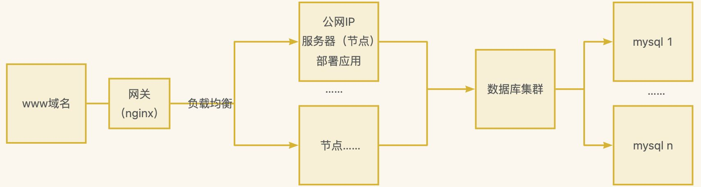

微服务框架基础概述¶
单体架构和集群架构概述¶
单体架构¶
所有的功能模块都在一个项目。

- 优点：部署快，开发简单
- 缺点：不能解决大并发问题……
集群架构¶
背景¶
集群架构主要是用来解决单体架构在性能、可靠性、可扩展性等方面的局限性。以下是集群架构针对单体架构的一些主要问题提供的解决方案：
- 性能问题：单体架构在面临高并发请求时，可能由于资源限制而无法提供高效的响应。集群架构通过增加多个服务器节点来分担请求负载，从而提高整体的处理能力和响应速度。
- 可靠性问题：在单体架构中，如果服务器出现故障，可能会造成整个系统不可用。集群架构通过冗余设计，当某个节点发生故障时，其他节点可以接管其工作，确保系统的高可用性和容错性。
- 可扩展性问题：单体架构在处理日益增长的数据和用户需求时，可能难以水平扩展。集群架构允许系统通过增加更多的服务器节点来水平扩展，从而支持更多的用户和数据量。
- 单点故障问题：单体架构容易存在单点故障的风险，即一旦某个关键部件出现问题，整个系统都会受到影响。集群架构通过分散风险，减少单点故障的影响。
- 维护和升级问题：在单体架构中，维护和升级可能需要停机进行，这会影响系统的可用性。集群架构支持滚动升级和在线维护，可以逐个节点进行操作，而不会影响整个系统的运行。
综上所述，集群架构通过分布式的设计理念，有效地解决了单体架构在处理大规模、高并发、高可用性要求场景下的不足。
示意图如下：

这种模式带来了许多好处，主要包括：
- 提高可用性：通过冗余设计，即使部分节点出现故障，整个系统仍能继续运行，从而提高了系统的可靠性和稳定性。
- 增强性能：多个节点可以并行处理任务，显著加快了数据处理速度和响应时间。对于大规模的数据分析、高性能计算等场景尤其有效。
- 扩展性强：随着业务增长或需求变化，可以通过简单地添加更多节点来轻松扩展集群的处理能力，而不需要替换现有的硬件设备。
- 资源共享：集群中的所有节点共享资源（如存储空间），这不仅提高了资源利用率，也简化了管理和维护工作。
- 成本效益：相比于购买昂贵的高端服务器，使用普通PC机构建集群往往更加经济实惠，同时还能获得接近甚至超越单一高端服务器的性能。
- 负载均衡：能够自动分配工作任务到不同的节点上执行，实现更高效的资源利用，并保证各节点之间的负载均衡，避免某一台机器过载。
- 容错机制：除了提供高可用性外，一些先进的集群技术还支持自动恢复功能，在检测到错误时能够迅速切换到备用节点继续服务，减少了停机时间和数据丢失的风险。
综上所述，采用集群模式不仅可以提升系统的整体性能与稳定性，还能根据实际需要灵活调整规模，是解决复杂计算问题及大数据处理的理想选择之一。
在集群架构下：
我们可以根据业务对项目的功能进行拆分，也就是微服务的概念。
鸡蛋不能放在一个篮子里！
微服务架构是一种将单一应用程序开发为一组小型服务的方法，每个服务运行在其独立的进程中，并通过轻量级机制（通常是HTTP资源API）进行通信。这些服务是围绕业务能力构建的，可以由完全自动化的部署机制独立部署。这种架构风格有几个关键特性：
- 服务粒度：每个微服务应该足够小，专注于完成一个特定的功能或业务能力。这样可以确保服务易于理解、开发、测试和变得更为灵活。
- 松耦合：微服务之间保持松散耦合关系，即一个服务的变化不会直接影响到其他服务。这通常通过定义清晰的服务边界来实现，比如使用API接口作为服务间交互的方式。
- 自主性：每个微服务都拥有自己的数据库和技术栈选择权，这意味着不同的团队可以根据自身需求选用最适合的技术来解决问题，而不需要整个项目统一采用某一种技术方案。
- 可扩展性与容错性：由于每个微服务都是独立部署的单元，因此可以针对特定的服务单独进行水平扩展以应对高负载情况；同时，单个服务发生故障时也不会导致整个系统崩溃，提高了系统的整体稳定性。
- 持续交付与DevOps文化：微服务架构鼓励采用持续集成/持续部署(CI/CD)流程以及DevOps工作方式，使得软件产品能够快速迭代并响应市场变化。
- 去中心化治理：相比于传统单体应用中可能存在的集中式控制结构，在微服务体系下更倾向于让各个团队根据自身情况进行决策和技术选型，从而促进创新和发展。
- 智能端点与哑管道：在微服务架构中提倡的是“智能端点”和“哑管道”的概念——即尽可能地减少传输过程中对消息的理解与处理逻辑，而是让每个服务自己负责处理其接收到的数据。
采用微服务架构可以帮助组织提高敏捷性和灵活性，但同时也带来了复杂性的增加，如分布式系统固有的挑战（数据一致性问题、网络延迟等）。因此，在决定是否采用微服务架构时需要综合考虑项目的具体需求、团队技能等因素。
总结¶
- 单体架构优缺点
- 开发部署简单，小型项目首选
- 但是项目启动慢，可靠性差，可伸缩性差
- 架构演进
- 垂直架构：将单体架构中的多个模块拆分为多个独立的项目，形成多个独立的单体架构
- 项目启动慢
- 可靠性差
- 可伸缩性差
- 扩展性和可维护性差
- 性能低
- 可能需要重复的功能太多
- 分布式架构：把重复的功能组件抽离出来作为服务提供者，然后多个项目作为消费者使用 RPC （Remote Procedure Call 远程过程调用，比如HTTP，WebServiceSOAP协议等）调用这个服务提供者。
- 一旦服务的提供商出现问题，所有消费者都要变更
- SOA （Service-Oriented Achitecture，面向服务架构）架构：是一个组件模型，它将应用程序的不同功能单元（称为服务）进行拆分，并通过这些服务之间定义良好的接口和契约联系起来。
- ESB（Enterparise Service Bus）企业服务总线：服务中介，主要是提供了一个服务于服务之间的交互，ESB 包含的功能如：负载均衡，流量控制，加密处理，服务的监控，异常处理，监控告急等。
- Dubbo 是 SOA 的产物
- 微服务架构：将业务彻底的组件化和服务化。在 SOA 上做的升华，原有的单个业务系统会拆分为多个可以独立开发、设计、运行的小应用，这些小应用之间通过服务完成交互和集成。
- 微服务架构 = 80% 的 SOA 架构思想 + 100% 的组件化架构思想 + 80% 的领域建模思想
- 特点：
- 服务实现组件化：开发者可以自由选择开发技术、也不需要协调其他团队
- 服务之间交互一般使用 REST API
- 去中心化，每个微服务都有自己的私有数据库持久化业务数据
- 自动化部署：把应用拆分成为一个一个独立的单个服务，方便自动化部署、测试、运维
- SpringCloud 是微服务时代的产物
- 垂直架构：将单体架构中的多个模块拆分为多个独立的项目，形成多个独立的单体架构
Spring Cloud 和 Spring Cloud Alibaba 简介¶
参考文章：
Spring Cloud 与 Spring Cloud Alibaba 的区别详解：从组件到实战场景全面对比_springcloud阿里巴巴和springcloud区别-CSDN博客
随着微服务架构的流行，如何有效地管理和协调这些微服务成为了一个关键问题。Spring Cloud 作为一套基于 Spring Boot 的框架，提供了一系列工具来简化微服务架构中的常见问题，如配置管理、服务发现、断路器、路由等。
而 Spring Cloud Alibaba 则是阿里巴巴开源的一套微服务解决方案，旨在为开发者提供更加符合国内企业需求的服务治理功能。
Spring Cloud 特性¶
- 服务发现与注册：通过 Netflix Eureka 或者 Consul 实现服务自动注册和发现。
- 配置管理：使用 Spring Cloud Config 来集中化管理外部配置文件，支持动态刷新配置。
- 负载均衡：Ribbon 提供了客户端负载均衡功能，使得调用远程服务变得更加简单。
- 熔断机制：Hystrix 提供了熔断器模式，帮助系统抵御依赖服务故障的影响，提升系统的容错能力。
- API Gateway：Zuul 和 Spring Cloud Gateway 可以作为系统的 API 网关，负责请求转发、过滤等功能。
- 分布式追踪：Sleuth 集成了 Zipkin，用于追踪微服务之间的调用链路，便于问题排查。
Spring Cloud Alibaba 扩展¶
Spring Cloud Alibaba 是 Spring Cloud 的一个子项目，它提供了对阿里巴巴中间件的支持，让开发者能够更方便地构建微服务应用。其主要特性包括：
- Nacos：集成了服务注册与发现、配置管理的功能，替代了 Eureka 和 Config Server。
- Sentinel：专注于流量控制、熔断降级等功能，提供了更强大的限流规则和实时监控。
- RocketMQ：支持分布式消息队列，适用于异步处理、解耦以及削峰填谷等场景。
- Seata：针对分布式事务问题，提供了一站式的解决方案，支持AT、TCC、Saga和XA事务模型。
- Dubbo Spring Boot Starter：使 Dubbo 能够更好地集成到 Spring Boot 应用中，简化开发流程。
无论是 Spring Cloud 还是 Spring Cloud Alibaba，都为微服务架构下的开发提供了强大而灵活的支持。选择适合自己的技术栈，可以帮助团队提高开发效率，降低运维成本，并加速产品的迭代速度。在实际应用中，根据项目的具体需求和技术栈偏好，合理选择相应的组件和服务，可以有效提升系统的稳定性和扩展性。
Spring Cloud 与 Spring Cloud Alibaba 对比¶
为了更清晰地展示 Spring Cloud 和 Spring Cloud Alibaba 在微服务架构中的不同特点和优势，以下将通过对比表格的形式进行说明。
对比表格¶
| 特性/功能 | Spring Cloud | Spring Cloud Alibaba |
|---|---|---|
| 服务发现与注册 | Netflix Eureka, Consul | Nacos |
| 配置管理 | Spring Cloud Config | Nacos |
| 负载均衡 | Ribbon | LoadBalancer (支持多种负载均衡策略) |
| 熔断机制 | Hystrix | Sentinel |
| API Gateway | Zuul, Spring Cloud Gateway | Spring Cloud Gateway (增强版，集成更多功能) |
| 分布式追踪 | Sleuth + Zipkin | SkyWalking (非官方推荐，但社区活跃) |
| 消息队列 | RabbitMQ, Kafka | RocketMQ |
| 分布式事务 | Atomikos, Bitronix | Seata |
| 服务调用框架 | Feign | Dubbo(Spring Boot Starter) |
| 适配国内需求 | 需要额外的定制开发以满足特定需求 | 更贴近国内企业的需求，例如对中文的支持更好 |
| 学习曲线 | 相对较高，需要理解多个组件的工作原理 | 相对较低，特别是对于使用过阿里巴巴中间件的开发者 |
| 生态兼容性 | 广泛兼容各种开源项目 | 主要围绕阿里巴巴生态系统设计，可能在与其他系统整合时需要额外工作 |
更新: 2025-05-14 13:36:17
原文: https://www.yuque.com/xiaoshan_wgo/codingnotes/rg8nkitvyzzgzip0